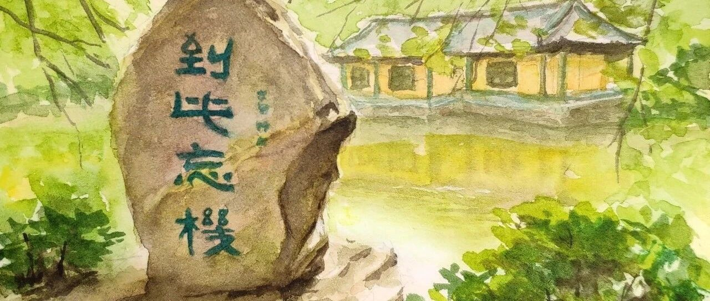

A Trip in Spring.
今天的内容来自旅行中的老李投稿～老李和老伴刚去了趟无锡，看看今天要和我们分享什么趣事～

近日结束了一段无锡的旅程，在鼋头渚的游历期间有一个小插曲想分享与读者。
我和老伴走下仙岛游船向鼋头渚方向走过长春桥，我为这个赏樱打卡网红桥拍照后再见到老伴时，她指着身旁一块上题“到此忘機”石碑问“機”怎么念，是什么意思。原来老伴对碑文好奇，见我不在刚“撩”了个导游模样的小伙，小伙也不知碑文何意。

“機”肯定是繁体字，我第一感觉是机械的机，但“到此忘机”做何解呐？
“到此忘机”音同到此忘记，到此“太湖绝佳处”触景生情会忘掉什么吗？忘记烦恼？忘记勾心斗角，忘记机关算计？意思沾边说的过去。不知道猜测是否正解。虽然感觉“到此忘机”不太高大上，但是一定出自大家之笔。
对，有手机，可以百度呀！查寻发现原来的有过和我们相似的经历游人探寻过。果然“忘机”一词在几位诗词大家的诗句中出现过，包括李白，白居易和王渤等。“忘机”的确是忘记机巧和诡诈，忘却世俗烦庸之意。宋人齐廓“浮生枉多事，到此合忘机”。这应该是碑文原出处。而湖畔“到此忘机”碑由上世纪三十年代书画名家王荫之先生受邀题写的。
良辰美景使人忘却烦恼忧愁，我的感受能够与大诗人及书画名家用心相通，突然感觉碑文高大了起来。
如果您有机会到此游览一定也能感受到此碑文的精妙之处，既是对美景的最高赞美，也是提醒我们抛弃名利纷争和世间烦恼，享受美好生活。

真是很有意思的游记呀！旅行的乐趣大概就藏在这些和景色互通的某些瞬间吧～
欢迎大家也投稿分享自己的春游哦～
另外欢迎转发、评论or给个“在看”呀～
下周见～